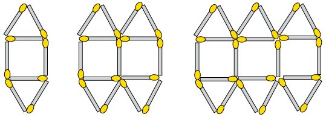

Assessering
In hierdie afdeling dui die getalle tussen hakies aan die einde van ’n vraag aan hoeveel punte die vraag werd is. Gebruik hierdie inligting om jou te help besluit hoeveel werk nodig is by elke vraag. Die totale getal punte wat aan hierdie assessering toegeken word, is 60.
- WordRyk Ingelyf. se wins het in die verhouding 5 : 3 verminder weens die resessie in
die land. As hulle wins aanvanklik R1 250 000 was, hoeveel is dit nou?
- Watter motor se petrolverbruik is beter: Ashley se motor, wat 520 km met 32 l
petrol gery het, of Zaza se motor, wat 880 km met 55 l petrol gery het? Wys al jou
berekeninge.
- Hanyani het ’n lening van R25 000 by ’n uitlener aangegaan wat hom elke jaar
22% rente vra. Hoeveel sal hy na een jaar skuld?
- Kyk na die volgende wisselkoerstabel:
Suid-Afrikaanse Rand
1.00 ZAR
inv. 1.00 ZAR
Indiese roepee
5.558584
0.179902
Australiese dollar
0.102281
9.776984
Kanadese dollar
0.101583
9.844200
Emiratiese dirham
0.360838
2.771327
Chinese renminbi yuan
0.603065
1.658195
Maleisiese ringgit
0.303523
3.294646
Chen keer terug na ’n sakebesoek aan Maleisië met 2 500 ringgit in sy beursie. As hy hierdie geld in Suid-Afrika na rand wissel, hoeveel sal hy ontvang?
- Vul <, > of = in die blokkie in om die verwantskap tussen die getalsuitdrukkings te
wys:
- \(6 - 4\) ☐ \(4 - 6\)
- \(2 \times -3\) ☐ \(-3^2\)
- Kyk na die getallery hier onder. Skryf die volgende term in die blokkie in.
\(-5; 10; -20\); ☐
- Bereken die volgende:
- \( (-4)^2 - 20\)
- \(\sqrt[3]{-8} + 14 \ \div 2\)
- \( (-4)^2 - 20\)
- Julius Caesar was ’n Romeinse keiser wat van 100 v.C. tot 44 v.C. geleef het. Hoe oud
was hy toe hy dood is?
-
- Skryf twee getalle neer wat ’n antwoord van -8 sal gee as hulle in ’n deelsom
gebruik word. Een van die getalle moet positief wees en die ander een negatief.
- Skryf twee getalle neer wat ’n antwoord van 8 sal gee as hulle in ’n aftreksom
gebruik word. Een van die getalle moet positief wees en die ander een negatief.
- Skryf twee getalle neer wat ’n antwoord van -8 sal gee as hulle in ’n deelsom
gebruik word. Een van die getalle moet positief wees en die ander een negatief.
- Skryf die volgende getal in wetenskaplike notasie: 17 miljoen.
- Watter van die volgende getalle is die grootste: \(3,47 \times 10^{21} \text{ of }7,99 \times
10^{20}\)?
- Vereenvoudig die volgende en laat alle antwoorde met positiewe eksponente:
- \( 3^7 \times 3^-2\)
- \((-12y^8) \div (-3y^2)\)
- \( \frac{(3xy^2z^3)(-yz)^2}{15x^5y^4z^7}\)
- \( 3^7 \times 3^-2\)
- Skryf die waardes van elk van die volgende neer:
- \((0.3)^3\)
- \( 8 \sqrt{\frac{25}{16}} \)
- \((0.3)^3\)
- Kyk na die volgende getallery: \(2; -8; 32; ...\)
- Skryf die reël waarmee elke term van die ry bepaal kan word in woorde neer.
- Skryf die volgende drie terme in hierdie ry neer.
- Skryf die reël waarmee elke term van die ry bepaal kan word in woorde neer.
- Die diagram hier onder wys ’n reeks patrone wat met vuurhoutjies gemaak is.

- Skryf ’n formule neer vir die reël wat die verband tussen die getal
vuurhoutjies en die posisie van die term in die ry (patroonnommer) beskryf.
Laat n die posisie van die term wees.
- Gebruik die reël om die waardes van a tot c in die volgende tabel te bepaal:
Nommer van die patroon
1
2
3
4
15
c
Getal vuurhoutjies benodig
8
15
22
a
b
148
- Skryf ’n formule neer vir die reël wat die verband tussen die getal
vuurhoutjies en die posisie van die term in die ry (patroonnommer) beskryf.
Laat n die posisie van die term wees.
- Kyk na die waardes in die volgende tabel:
x
-2
-1
0
1
2
5
12
y
-7
-4
-1
2
5
98
- Skryf die reël om die \(y\)-waardes in die tabel te bepaal in woorde neer.
- Gebruik die reël om die ontbrekende waardes in die tabel te bepaal en vul
hulle in.
- Skryf die reël om die \(y\)-waardes in die tabel te bepaal in woorde neer.
- . Vereenvoudig:
- \(2z^2 - 3z^2\)
- \( 8y^2 - 6y + 4y - 7y^2\)
- \(2z^2 - 3z^2\)
- Bepaal die waarde van \(2a^2 - 10\) if \(a = -2\).
- Bepaal die waarde van die volgende as \(c + 2d = 27\)
- \(2c + 4d\)
- \(\frac{c + 2d}{-9}\)
- \(\sqrt[3]{c + 2d}\)
- \(2c + 4d\)
- Los op vir \(x\):
- \(-x - 11\)
- \(2x -5 = - 11\)
- \(4x^3 = 32\)
- \(-x - 11\)